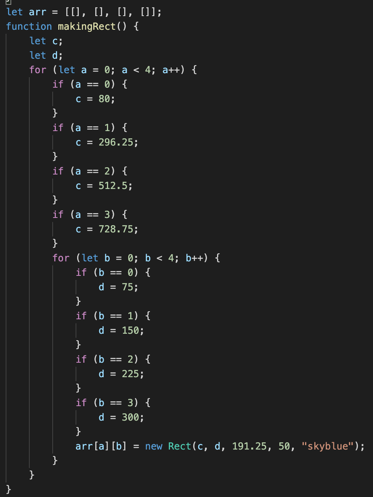
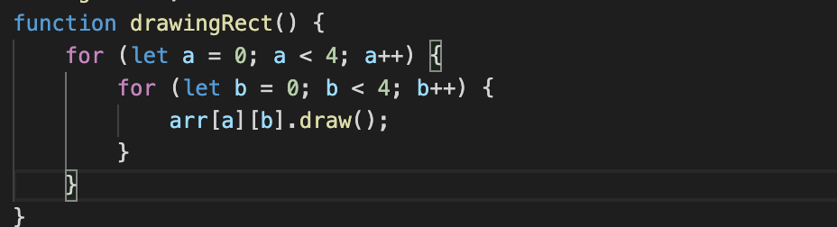
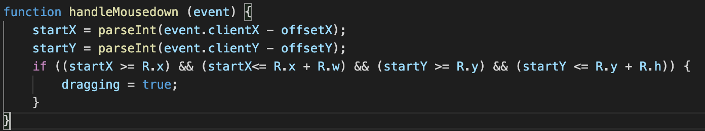
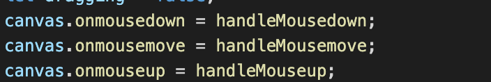

Design Journal
Final project
- How many people are affected of COVID19?
- Changing the schedule
- Animation
- Brick breaker (using JS and HTML)
- Set a specific time for player to play
3A
- The purpose of the program is for entertainment.
- The game is created for people to play for relaxing purpose.
- In the video, I showed the confirm that pop up asking people if they want to play or not.
- Click to make the ball move, and click and drag the rectangle to make the ball bounce.
- When the ball hit the brick, the brick will disappear.
- When all the bricks are hit or when the life turns to 0, I made an alert pop up.
- The input of the game is the confirm.
- I created the confirm to check if the player want to play the game or not.
- The ouput are the score, life, and an alert.
- The score and life are created for player to know how many bricks they've hit or how many life they've lost.
- An alert is to tell the player that the game is over or they won the game.
3B


- The data structure I used is arrays.
- In the first line, the array is empty.
- In the last line, the array contains the new rectangle object that represent the bricks.
- The arrays help me not to write the code to draw all the rectangles again and again.


3C
- The function is used to check if the client of the mouse is inside the rectangle or not when you pressing down the mouse.
- If the client of the mouse is inside the rectangle, the mouse will move as we drag.
- The first line in the function is to convert the client X of the mouse to the X position of the canvas.
- The second line is to convert the client Y of the mouse to the Y position of the canvas.
- The next line is to check if the client X and client Y of the mouse after convert is inside the X and Y position of the rectangle or not.
- The last line is to change the dragging into true so that the mouse can be able to drag the rectangle.
3D
- First call: When the mouse is outside of the rectangle.
- Second call: When the mouse is inside of the rectangle.
- Condition tested by the first call: the client X and the client Y of the mouse after convert is outside the X and Y position of the rectangle.
- Condition tested by the second call: the client X and the client Y of the mouse after convert is inside the X and Y position of the rectangle.
- Result of the first call: calculate the start X and start Y.
- Result of the second call: calculate the start X and start Y and change the dragging into true.